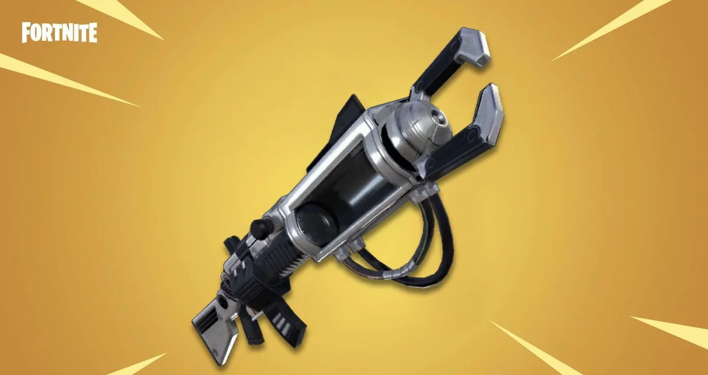
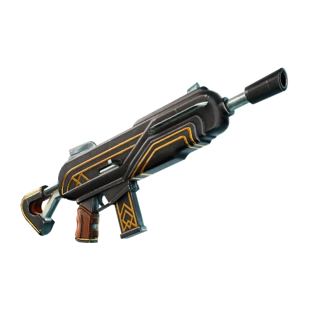
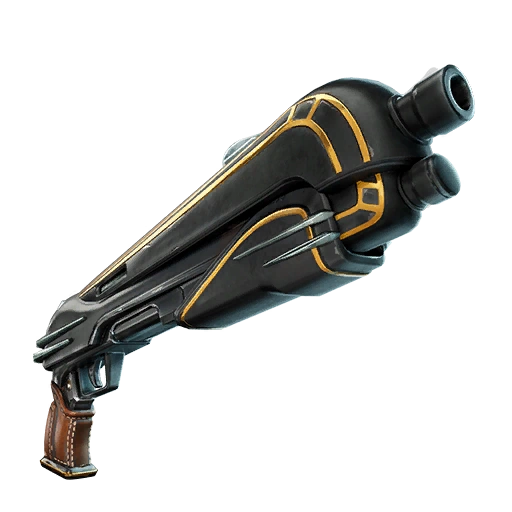
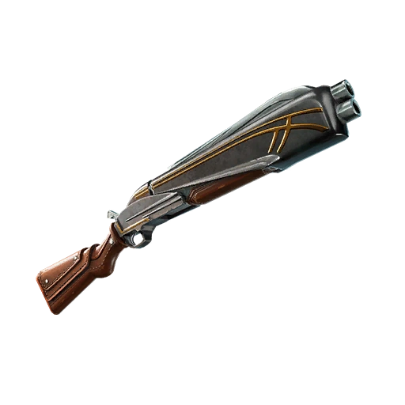
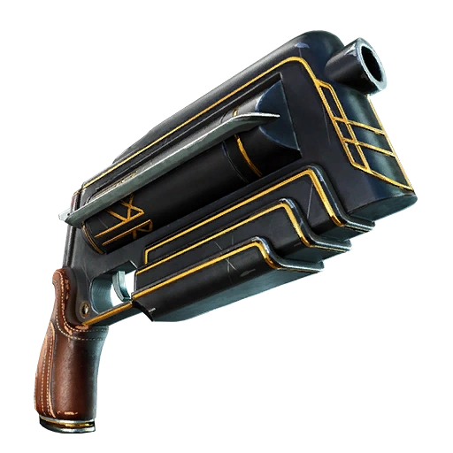

Weapon sound design, grouped by game. Each one has the sounds themselves, so you can listen as well as read.
// Epic Games
Fortnite Save the World
Zapotron — Weapon Audio · 2021
In 2021 I was asked to update the sounds for the Zapotron. I was delighted to take on the redesign of such an iconic weapon, working within the existing implementation: the one-shots, loops and release sounds that build up to a charged shot.
The Zapotron is an important weapon in Save the World, where it helps players take on end-game enemies such as Smashers.
Its weakness is that the charged shot takes a long time to build up to maximum damage. In the later levels players are often surrounded by Husks, which makes the weapon much less useful. Ideally it would be dual-use, with a faster single-shot mode to clear hordes of Husks without switching weapon. I suggested this at the time, but it wasn’t prioritised.
Have a listen to the sounds I made for it below.

// Streamed here as compressed MP3 previews · originals held as 16-bit WAV
// Trigger
// Charge
// Charge Whine
// Barrel Spin
// Charge Hit
// Shot
The Floor Flusher — Art Deco Assault Rifle · Weapon Audio
The Floor Flusher is the assault rifle from the Art Deco set in Fortnite Save the World.
The firing is loop based rather than one shot per round: a start transient opens it, a loop sustains while the trigger is held, and a stop tail closes it. The loop and the tail were each built at close, medium and distant perspectives, and all four firing loops are exactly the same length.
Have a listen below.

// Streamed here as compressed MP3 previews · originals held as 16-bit WAV
// Start
// Fire Loop · by distance
// Stop Tail · by distance
// Out of Ammo
// Destroyed
The Brush Off — Art Deco Shotgun · Weapon Audio
The Brush Off is one of the two shotguns in the Art Deco set in Fortnite Save the World.
The firing was built at three distances — close, medium and distant — with variations at each. The reload is split into its mechanical parts rather than recorded as one pass: the charge moving in and out, the shell inserted, and the spent shell leaving, with a separate metal version of that.
Have a listen below.

// Streamed here as compressed MP3 previews · originals held as 16-bit WAV
// Fire · Close
// Fire · Medium Distance
// Fire · Distant
// Reload
The Big Shot — Art Deco Break-Action Shotgun · Weapon Audio
The Big Shot is the other Art Deco shotgun, a break-action weapon that hits several enemies at once in a short, wide cone, with a tiny magazine and a long reload.
The firing was built at close and medium distances, with variations at each.
Have a listen below.

// Streamed here as compressed MP3 previews · originals held as 16-bit WAV
// Fire · Close
// Fire · Medium Distance
// Reload
The Mouth Piece — Art Deco Pistol · Weapon Audio
The Mouth Piece is a pistol from the Art Deco set in Fortnite Save the World. It fires slowly but hits hard, and carries very little ammo.
I made it as meaty as possible. Low end processing carries the weight of the shot, and the metal sits prominently in the mix.
The reloads are split into three sections — start, mid and end — with three sounds in each group, allowed to randomise between themselves. Nine files, 27 unique reload sequences. That was one of the ways I made this weapon feel distinct, and it only needed the sound cue and the animation sequence triggers set up accordingly.
Have a listen below — the fire sounds, close and far, and the reload groups.

// Streamed here as compressed MP3 previews · originals held as 16-bit WAV
27 possible sequences — press play to hear one
// Fire · Close
// Fire · Far
// Reload · Start
// Reload · Mid
// Reload · End
// Reload · Shell Casings
Black Metal Assault Rifle — Weapon Audio
An assault rifle from the Black Metal set in Fortnite Save the World.
The firing is one shot per round rather than a sustained loop, with four variations close and three distant. The reload is split into start, mid and end, the same three-part approach as The Mouth Piece.
Have a listen below.
// Streamed here as compressed MP3 previews · originals held as 16-bit WAV
// Fire · Close
// Fire · Distant
// Reload
Black Metal Shotgun — Weapon Audio
A shotgun from the Black Metal set in Fortnite Save the World.
The firing was built at three distances — close, medium and distant — with three variations at each. Alongside the reload there are degrade and destroy sounds, for the weapon wearing down and breaking.
Have a listen below.
// Streamed here as compressed MP3 previews · originals held as 16-bit WAV
// Fire · Close
// Fire · Medium Distance
// Fire · Distant
// Reload
// Degrade & Destroy
Black Metal Sniper — Weapon Audio
A sniper rifle from the Black Metal set in Fortnite Save the World.
The firing was built at three distances — close, medium and distant — with two variations at each, and the reload is split into start, in and end. This one also has handling sounds for the weapon being picked up and dropped.
Have a listen below.
// Streamed here as compressed MP3 previews · originals held as 16-bit WAV
// Fire · Close
// Fire · Medium Distance
// Fire · Distant
// Reload
// Pick Up & Drop
Vindertech Pulsar — Weapon Audio
The Vindertech Pulsar is an energy assault rifle in Fortnite Save the World.
Every sound here is a loop rather than one shot per round. The fire loop runs while the trigger is held, muzzle sparks layer over the top with a separate version for when the player is close to the weapon, and a low ammo loop sits underneath as the magazine runs down.
Have a listen below. These players loop, so each one keeps running until you pause it.
// Streamed here as compressed MP3 previews · originals held as 16-bit WAV
// Fire Loop
// Muzzle Sparks
// Low Ammo